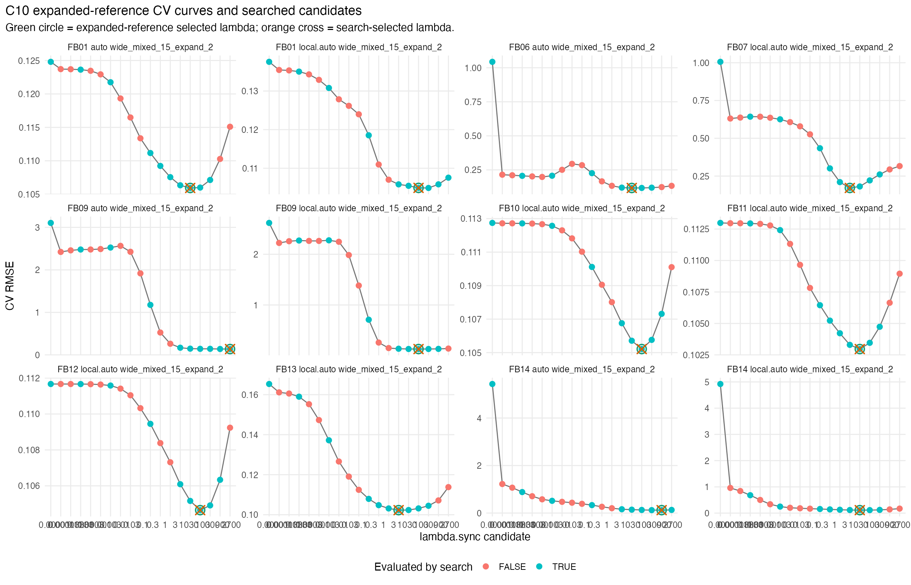
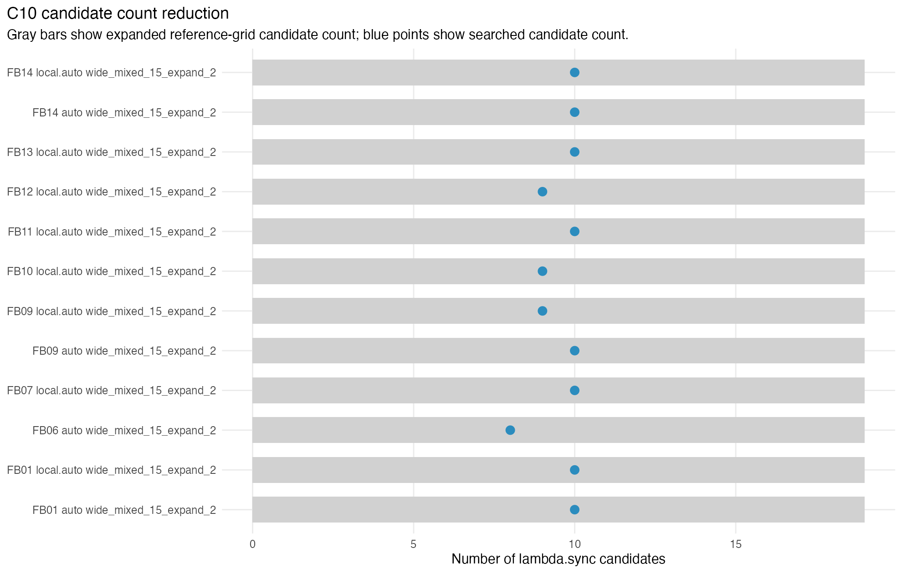
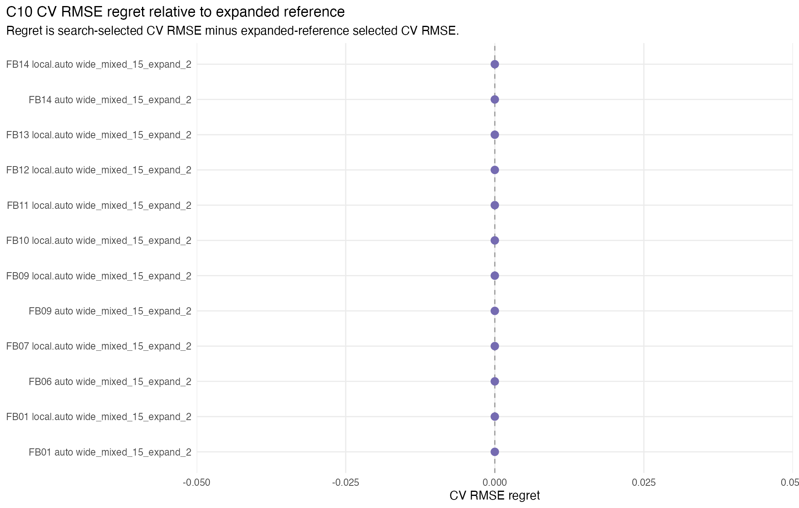

C10 evaluates the guarded coarse-to-refine lambda.sync search policy with explicit boundary expansion across a frozen first-batch suite. The expanded reference grid contains two extra candidates below the initial positive lower bound and two extra candidates above the initial upper bound. The deployable correctness guard is CV RMSE regret: the search-selected CV RMSE minus the expanded-reference selected CV RMSE. A practical tie rule selects the smallest lambda.sync whose CV RMSE is within 0.2% of the grid minimum.
Across the C10 validation cases, selected-lambda agreement was complete, maximum CV RMSE regret was 0, and candidate reduction was at least 47.368% relative to the expanded reference grid. These validation results exercise the package helper, but they do not yet establish a package default.
| batch_id | dataset_id | chart_dim_rule | layout_id | initial_candidate_count | reference_candidate_count | search_candidate_count | candidate_reduction_pct | boundary_expansion_count | full_best_position | full_selected_lambda | search_selected_lambda | selected_agree | cv_rmse_regret | cv_rmse_relative_regret | full_total_elapsed_sec | search_total_elapsed_sec | elapsed_speedup |
|---|---|---|---|---|---|---|---|---|---|---|---|---|---|---|---|---|---|
| FB01 | LA-D1-RAW-N500 | auto | wide_mixed_15_expand_2 | 15 | 19 | 10 | 47.368 | 0 | interior | 30 | 30 | TRUE | 0 | 0 | 3.003 | 1.699 | 1.7675 |
| FB01 | LA-D1-RAW-N500 | local.auto | wide_mixed_15_expand_2 | 15 | 19 | 10 | 47.368 | 2 | interior | 100 | 100 | TRUE | 0 | 0 | 2.946 | 1.807 | 1.6303 |
| FB06 | LA-D2-RAW-N500 | auto | wide_mixed_15_expand_2 | 15 | 19 | 8 | 57.895 | 0 | interior | 30 | 30 | TRUE | 0 | 0 | 8.782 | 4.004 | 2.1933 |
| FB07 | LA-D2-HC-TOP1-N500 | local.auto | wide_mixed_15_expand_2 | 15 | 19 | 10 | 47.368 | 0 | interior | 10 | 10 | TRUE | 0 | 0 | 10.778 | 6.194 | 1.7401 |
| FB09 | LA-13K-SUB-N500 | auto | wide_mixed_15_expand_2 | 15 | 19 | 10 | 47.368 | 2 | right_boundary | 2700 | 2700 | TRUE | 0 | 0 | 4.341 | 2.525 | 1.7192 |
| FB09 | LA-13K-SUB-N500 | local.auto | wide_mixed_15_expand_2 | 15 | 19 | 9 | 52.632 | 1 | interior | 100 | 100 | TRUE | 0 | 0 | 4.253 | 2.317 | 1.8356 |
| FB10 | SYN-PARA-LINE-N500 | local.auto | wide_mixed_15_expand_2 | 15 | 19 | 9 | 52.632 | 1 | interior | 100 | 100 | TRUE | 0 | 0 | 2.74 | 1.451 | 1.8884 |
| FB11 | SYN-SADDLE-LINE-N500 | local.auto | wide_mixed_15_expand_2 | 15 | 19 | 10 | 47.368 | 0 | interior | 30 | 30 | TRUE | 0 | 0 | 2.719 | 1.573 | 1.7285 |
| FB12 | SYN-TWO-PLANES-N600 | local.auto | wide_mixed_15_expand_2 | 15 | 19 | 9 | 52.632 | 1 | interior | 100 | 100 | TRUE | 0 | 0 | 3.56 | 1.905 | 1.8688 |
| FB13 | SYN-SIMPLEX-FACES-N600 | local.auto | wide_mixed_15_expand_2 | 15 | 19 | 10 | 47.368 | 0 | interior | 10 | 10 | TRUE | 0 | 0 | 4.232 | 2.416 | 1.7517 |
| FB14 | SYN-RANK-BLOCKS-N600-P100 | auto | wide_mixed_15_expand_2 | 15 | 19 | 10 | 47.368 | 2 | interior | 900 | 900 | TRUE | 0 | 0 | 45.658 | 22.483 | 2.0308 |
| FB14 | SYN-RANK-BLOCKS-N600-P100 | local.auto | wide_mixed_15_expand_2 | 15 | 19 | 10 | 47.368 | 0 | interior | 30 | 30 | TRUE | 0 | 0 | 34.576 | 18.664 | 1.8526 |

Each panel shows the expanded reference CV curve. Search-evaluated candidates are highlighted. The green circle marks the expanded-reference tie-rule selection and the orange cross marks the search selection.

